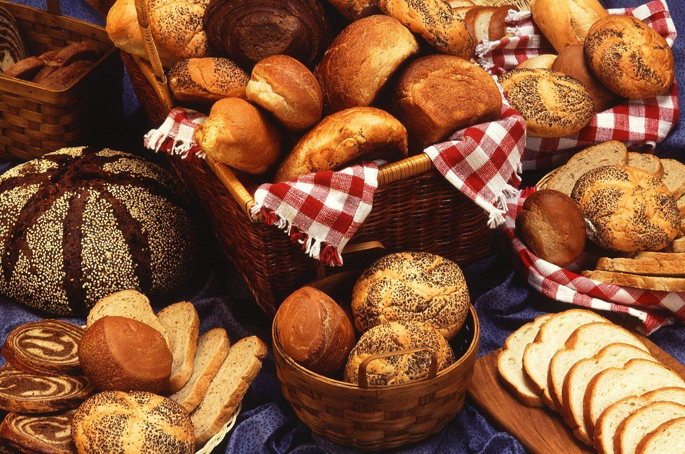

制作側の連想
泡立て器の部位を、配置図にしてみる
このサイトは、泡立て器をひとつ図にして、六つの部位に番号をふる形で作りました。制作側の連想で、お店の理念・由来とは無関係です。実際の製品の仕様を示すものでもありません。
凡例
六つの部位
- 1吊り穴柄の端にあいた小さな穴。ひっかけて置くための部分。
- 2持ち手(柄)手で握る細長い部分。
- 3口金柄とワイヤーをひとつにまとめる金属の筒。
- 4ワイヤー口金から広がる細い針金。口金の近くでは、まだ束になっている部分。
- 5輪(ループ)横にふくらんで、いちばん幅の広くなる曲線の部分。
- 6先端輪の先がひとつに合わさる、下の端の部分。
ギャラリー(イメージ)
コーヒーとパンの写真




写真はコーヒーやパンのイメージです。お店のものではなく、お店で提供している商品を示すものでもありません。
ご案内
お店のこと(確認できたものだけ)
| 所在地 | 〒693-0001 島根県出雲市今市町５４１−２ |
|---|---|
| 電話 | 準備中 |
| 営業時間 | 準備中 |
| 定休日 | 準備中 |
| ご予約 | 準備中 |
| 駐車場 | 準備中 |
| SNS | Instagram @we_are_holo |